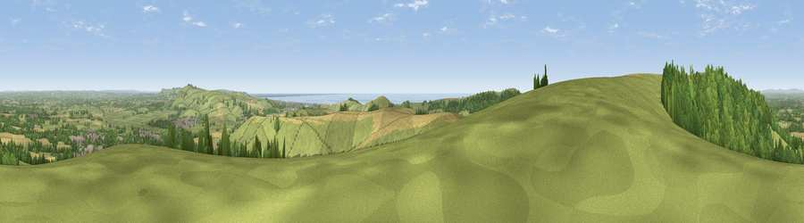

Steyning Round Hill
#986 in England · top 5% of its area beats it · near SteyningThe view, rendered

A 360° render of this exact spot computed from the terrain model, tree cover and land cover — summer colours, afternoon light, calibrated against photographs of famous viewpoints. Real trees, hedges and buildings will differ in detail.
The panorama
Grey silhouette: terrain skyline in each direction (720 bearings, Earth curvature and refraction included). Dashed green: skyline with trees (+15 m) and buildings (+8 m) as obstacles. Blue strip: how far the ground is visible on each bearing.
Where the view opens
Wedge length = distance to the farthest visible ground on that bearing (vegetation-aware). Rings at 10, 25 and 50 km.
What fills the view
48% grassland · 31% woodland · 15% cropland · 4% water · 2% built-up
Angular shares of the visible panorama (visual magnitude), not map area. Landscape diversity 0.53 (0–1 Shannon).
Key numbers
More beautiful places nearby
The staircase of upgrades: each row has a higher view potential than everything closer. Driving times are estimates from straight-line distance, calibrated against real road routing — check an actual route before setting out.
| Place | Direction | Drive | Score |
|---|---|---|---|
| Viewpoint near Steyning | NW · 2 km | ~4 min | 82.6 |
| Chanctonbury Ring | NW · 3 km | ~8 min | 87.0 |
| Firle Beacon | E · 32 km | ~50 min | 88.9 |
| Viewpoint near Niton | WSW · 75 km | ~99 min | 89.2 |
| Viewpoint near West Bexington | W · 163 km | ~185 min | 89.5 |
| The Knoll | W · 164 km | ~186 min | 91.0 |
50.87962, -0.34631 · source: osm peak · position refined by local search. Computed location — check access rights before visiting.